HOWTO Setup Lab Sandbox Environment
My 4+ year old home lab server:
- Intel NUC (NUC8i3BEH) 32GB RAM and 1TB SSD (such as - Kingston SKC2500M8/1000G)
IGEL Security Ports One Pager
flowchart TD
A[UMS Console]-- Port 5900 TCP SSL Tunnel Encrypted VNC-data --> B[\Intranet OS 11 Devices/]
A[UMS Console]-- Port 8443 TCP --> C{UMS Server}
C{UMS Server}<-- Port 8443 TCP --> B[\Intranet OS 11 Devices/]
C{UMS Server}<-- Port 8443 TCP --> Q[\Intranet OS 11 Devices/]
C{UMS Server}-- MS Active Directory Services Port --> D[(MS Active Directory Services)]
C{UMS Server}-- DB Port--> E[(UMS DB)]
C{UMS Server}-- Port 30022 TCP --> B[\Intranet OS 11 Devices/]
C{UMS Server}-- Port 30005 TCP UDP --> Q[\Intranet OS 12 Devices/]
C{UMS Server}-- Port 30005 TCP UDP --> B[\Intranet OS 11 Devices/]
C{UMS Server}-- Port 8443/443 TCP --> F{IGEL Cloud Gateway}
B[\Intranet OS 11 Devices/]-- Port 30001 TCP --> C{UMS Server}
G[/Internet OS 11 Devices\]-- Port 8443/443 TCP --> H((Internet Connection))
H((Internet Connection))<-- Port 8443/443 TCP --> F{IGEL Cloud Gateway}
C{UMS Server}-- Port 443 TCP --> H((Internet Connection))
H((Internet Connection))-- Port 443 TCP --> I[[UMS Download Server]]
H((Internet Connection))-- Port 443 TCP --> J[[UMS Licensing Server]]
K[/Internet OS 12 Devices\]<-- Port 8443 TCP --> H((Internet Connection))
L[UMS Web App]-- Port 443 TCP --> C{UMS Server}
H((Internet Connection))<-- Port 443 TCP --> M[[OBS]]
M[[OBS]]<-- Port 443 TCP -->N[[Service Hub]]
M[[OBS]]<-- Port 443 TCP -->O[[Customer IDP]]
H((Internet Connection))<-- Port 443 TCP --> P[[App Portal]]
H((Internet Connection))<-- Port 443 TCP --> Q[\Intranet OS 12 Devices/]
H((Internet Connection))<-- Port 443 TCP --> K[/Internet OS 12 Devices\]NOTE: Additional diagrams can be found in the HOWTO Basic Setup Guide.
IGEL OS 12 Devices
- Port 8443 (TCP) Incoming / Outgoing
NOTE: The Unified Protocol is used for all communication between the UMS and OS 12 devices. This single path of communication is now accomplished with a WebSocket connection, enabling persistent, bi-directional, full-duplex TCP connectivity between UMS 12 and OS 12 devices.
IGEL Devices
- Port 5900 (TCP) Incoming
- Port 30005 (TCP/UDP) Incoming
- Port 30001 (TCP) Outgoing
- Port 8443 (TCP) Incoming / Outgoing
- Port 30022 (TCP) Incoming
UMS Console
- Port 5900 (TCP) Outgoing for invoking VNC session
- Port 8443 (TCP) Outgoing
UMS Server
- Port 443 (TCP) Outgoing
- Port 8443 (TCP) Incoming / Outgoing
- Port 30001 (TCP) Incoming
UMS Server 1+n with Loadbalancer on same server
- Port 30002 (TCP)
Microsoft Active Directory Services
- LDAP: Port 389 (TCP) Outgoing
- LDAPS: Port 636 (TCP) Outgoing
UMS DB
- Microsoft SQL: Port 1433 (TCP) Incoming
- Oracle: Port 1521 (TCP) Incoming
- Apache Derby: Port 1527 (TCP) Incoming
- PostgreSQL: Port 5432 (TCP) Incoming
UMS Licensing Server
- fwus.igel.com
- susi.igel.com
- Port 443 TCP Incoming
UMS Download Server
- fwus.igel.com
- Port 443 TCP Incoming
Summary of Steps to Create Lab Sandbox Environment
- Setup PC file system
- Install Virtual Box
- Install Linux and Windows virtual machines
- Install UMS on Linux (Ubuntu 18.04)
- Create IGEL OS clients
- Optional install ICG from UMS (ICG runs on Linux (Ubuntu 18.04))
- Optional – Advanced – Setting up firewall with pfSense (ICG <--> UMS)
Using other Hypervisors
IGEL OS using VMware:
- Create new Virtual Machine (select IGEL ISO image)
- Choose Operating System (Other > Other 64-bit)
- Choose Firmware Type (Legacy BIOS)
- Change memory from 256 MB to 4096 MB
- Change Network Adapter to Bridged Networking > Autodetect
IGEL OS on Hyper-V:
- Allocated at least 4GB (4096 MB) of memory
- Create Generation 1 VM
- Remove the Network adapter
- Add a Legacy Network adapter
Setup PC File System and Downloads
Create a folder called igel-lab to hold:
- igel-download/ -
Installers (UMS, ICG, IGEL OS) - igel-packages/ -
Custom partitions fromIGEL Community GitHub - guest-download/ -
Installers (Ubuntu, Windows, pfSense, Zenmap) - manuals/ -
Manuals (IGEL, VirtualBox, misc. documents)
Download software:
- VirtualBox and install. IGEL OS 11 / 12 has VirtualBox Guest Additions built in to support shared folders.
- Linux ISO Ubuntu Desktop 18.04
- Linux ISO Ubuntu Desktop 20.04
- Linux ISO Ubuntu Desktop 22.04
- Optional – Windows Server 2019 ISO - 180 day trial
- Optional – Windows Server 2022 ISO - 180 day trial
- IGEL Software - OS 11 / 12, UMS - Workspace Edition, ICG - Enterprise Management Pack
- IGEL Community GitHub: Custom Partitions
- IGEL Community GitHub: IGEL OS APP RECIPES
Create Linux VM for UMS Install
- Follow VirtualBox guide for installing ISO image (Ubuntu 64 bit; 12GB RAM; 100GB Disk, take defaults for the rest; Shared folder to mount PC file system for images and packages)
- After install then install time synchronization, update OS and upgrade OS
1 2 3 4 5 6 7 | |
- Mount VirtualBox Guest Additions CD image
VitrualBox VM > Devices > Insert Guest Additions CD image... - Install VirtualBox Guest Additions
cd /media/.../VBox_GA...; sudo ./VBoxLinuxAdditions.run - Add login account to vboxfs group
sudo vi /etc/group; sudo reboot now
Install UMS on Linux
- Follow IGEL Linux installation notes -- LINK- sudo ./setup-igel-ums-linux-[version].bin
Note Steps to install on Windows -- LINK
- IGEL Community on GitHub UMS Console setup - LINK
Create IGEL OS Clients
VirtualBox > New
- Name:
name of IGEL OS system - Type:
Linux - Version:
Ubuntu (64-bit) - Memory size:
4096 MB Defaults for the restCreateSettings > Network > Attached to Bridged Adapter- Folder Name:
igel-lab automountOK- Start VM
- Disk file to install from:
path to IGEL OS 11 / 12 ISO file - Start
Follow IGEL OS 11 installation procedures - LINK
Follow IGEL OS 12 installation procedures - LINK
Registering Devices on the UMS Server
- UMS endpoint management (see searching for devices) - LINK
Run UMS Web App
- Start UMS Web App -
https://<UMS-Server>:8443/webapp/#/login - UMS Web App help - LINK
UMS to/from IGEL OS 11 Communication ports (NO ICG)
Core Communication UMS / OS 11
-
Core (scanning for device) : 30005 (TCP/UDP) : (UMS agent) Device : The device responds to a broadcast sent by the UMS during a scan. The port number to be used is contained in the UDP packet sent by the UMS. From UMS Server:
nc -v -z IGEL-OS-IP-ADDRESS 30005 -
Core (direct device communication) : 30001 (TCP) : UMS Server (Windows: service IGELRMGUIServer; Linux: daemon igelRMServer). From IGEL OS:
nc -v -z UMS-SERVER-IP-ADDRESS 30001 -
Core (file transfer, firmware customization, licenses, Universal Firmware Update) : 8443 (TCP) : UMS Server (Windows: service IGELRMGUIServer; Linux: daemon igelRMServer). Request for files. From IGEL OS:
nc -v -z UMS-SERVER-IP-ADDRESS 8443
Optional Communication UMS / OS 11
-
Core (secure terminal) : 30022 (TCP) : Device (UMS agent). From UMS Server:
nc -v -z IGEL-OS-IP-ADDRESS 30022 -
Core (shadowing) via UMS Web App : 5900 (TCP) : Device (UMS agent). From UMS Server / Console:
nc -v -z IGEL-OS-IP-ADDRESS 5900 -
Core (Wake on LAN) : 9 (UDP). The UMS Server sends magic packets to the devices. From UMS Server:
nc -u -v -z IGEL-OS-IP-ADDRESS 9
NOTE: Shadowing from UMS Web App triggers the UMS Server to initiate a VNC session for shadowing. The VNC session is routed through the UMS Server.
ICG to/from IGEL OS 11 Communication ports (443 or 8443)
All communication over 8443 (default) or 443 as defined during installation of ICG.
Core (with ICG) : 8443 (default) or 443. From IGEL OS: nc -v -z ICG-SERVER-IP-ADDRESS 8443 or nc -v -z ICG-SERVER-IP-ADDRESS 443
NOTES:
- The only supported option for ICG is to have direct access to port 8443/443 over a public facing IP address. Confirm that
NOTHING (NO - load balancer, Web Application Firewall, or security appliance that is manipulating traffic)is between the ICG and IGEL OS devices. - Also make sure the ICG, UMS, and IGEL OS clients are using NTP for time services.
- Connect to ICG via HTTPS URL to confirm the health of the server:
https://<icg FQDN>:port/usg/server-statuswhere port is either 8443 or 443.
Optional - Install ICG from UMS (OS 11)
- Follow VirtualBox guide for installing ISO image (Ubuntu 64 bit; 8GB RAM; 25GB Disk, take defaults for the rest)
- After install then install time synchronization, update OS and upgrade OS
1 2 3 4 5 6 | |
- Setup SSH sample --
Edit for your environment
1 2 3 4 5 6 7 8 9 10 11 12 13 14 15 16 17 18 19 20 21 22 23 24 25 26 27 28 29 30 31 32 33 34 | |
Optional - Advanced - Setting up Firewall with pfSense
The IGEL Cloud Gateway (ICG) is required if the UMS and the devices are not in the same network. The following scenarios are typical use cases for the ICG:
- The endpoint devices (IGEL UD, UD Pocket or devices converted by UDC3/OSC) of all geographically dispersed branches of a company are to be managed by one central UMS.
- UD Pocket or devices converted by UDC3/OSC are to be managed by the UMS which is residing on premises.
Use pfSense to create firewall (DMZ)
- Place the ICG and IGEL OS clients outside the firewall (internet)
- Place the UMS inside the firewall (company network)
- Follow this guide for setting up pfSense - LINK
- Setup network discovery and security auditing software (Zenmap) to probe the servers and find open ports - LINK
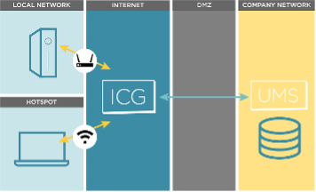 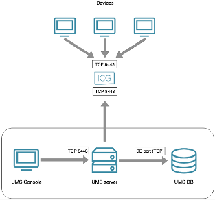 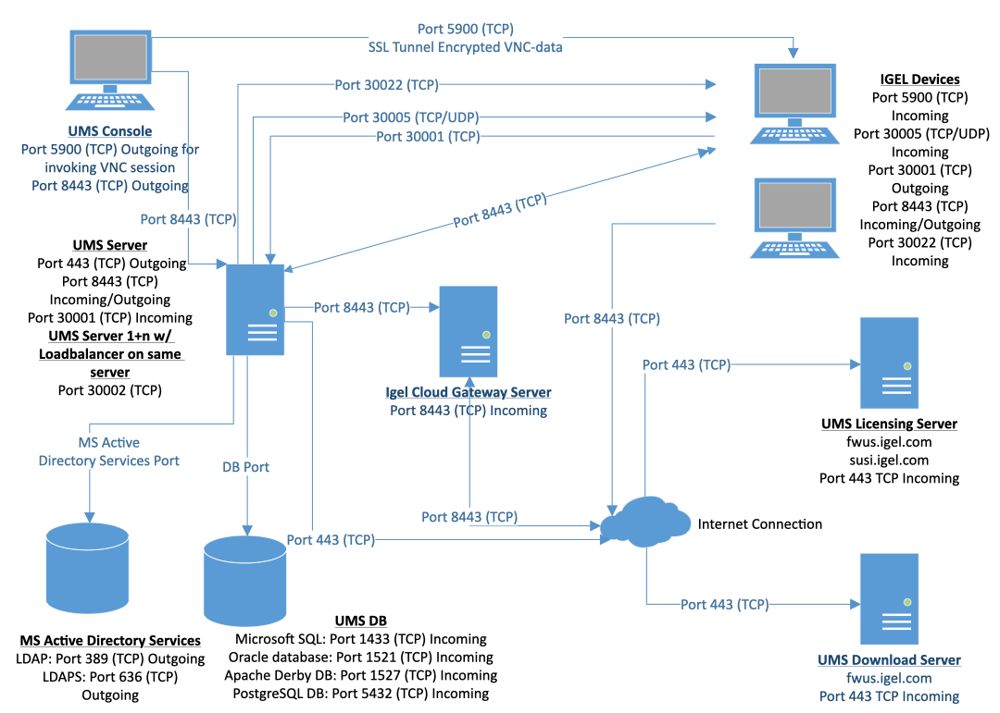 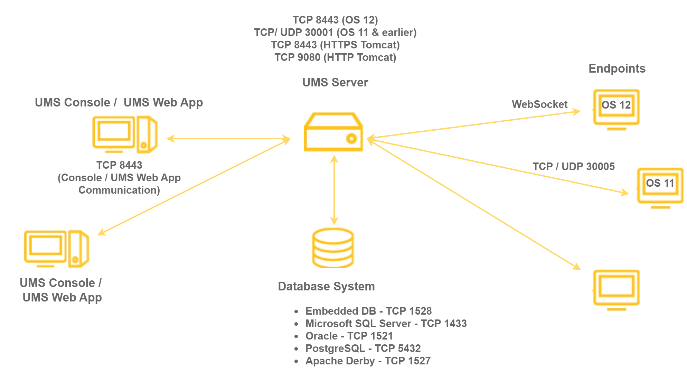
Optional - Setup DBeaver to Access UMS Internal DB
NOTE: Do NOT do this on your production UMS Server!!
An Entity Relationship (ER) Diagram is a type of flowchart that illustrates how entities relate to each other within a system. In terms of a database management system, an entity is a table. So by showing relationships among tables, the ER diagram represents the complete logical structure of a database.
Entity Relationship (ER) Diagrams for UMS 12.3.0 Database
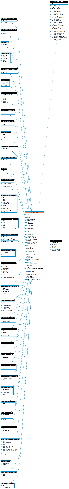

Summary of Steps to Connect DBeaver to UMS Internal DB
- Install DBeaver
- Add IGEL UMS Derby client jar file to Database
->Driver Manager - Make read-only connection to UMS database
Install DBeaver (Ubuntu)
- Download DBeaver
- Install onto UMS server:
sudo dpkg -i dbeaver-<version>.deb
Note: If you have errors (such as missing java), then fix sudo apt --fix-broken install
Add IGEL UMS Derby Client JAR File to DBeaver Driver Manager
- Start DBeaver
- Add UMS Derby client jar file. If you do not add the UMS version of Derby client jar file, then an error may occur when you try to connect.
- Find the UMS version of Derby client jar file (derbyclient.jar)
1 | |
- Copy file out of the UMS folder -
sudo cp file_above /tmp - Add the copied file to DBeaver Driver Manager Derby Server
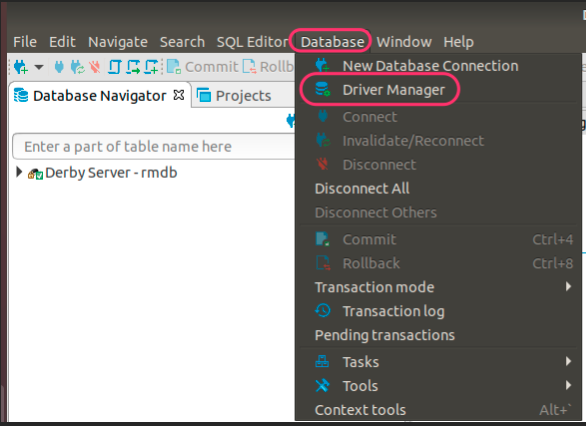 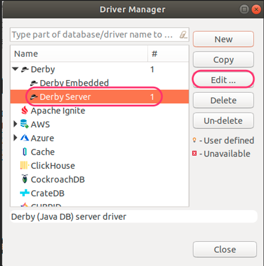 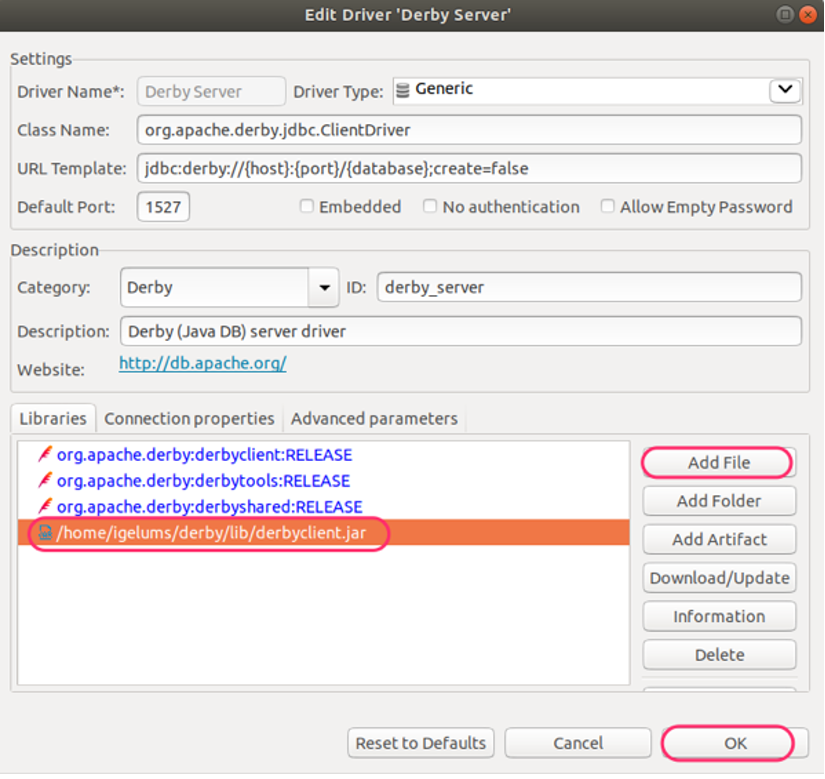
Make Read-Only Connection to the IGEL UMS Database
- Make Read-only connection to the IGEL UMS database and test connection
- Database -> New Database Connection
- Port: 1528
- Database/Schema: rmdb
- User name & Password
- Test connection
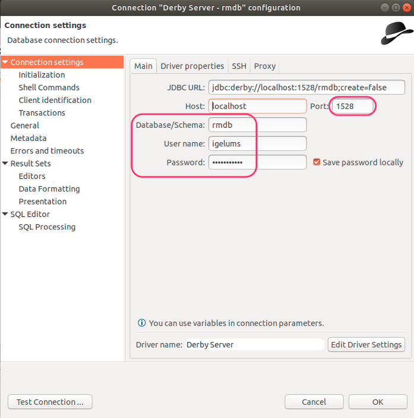 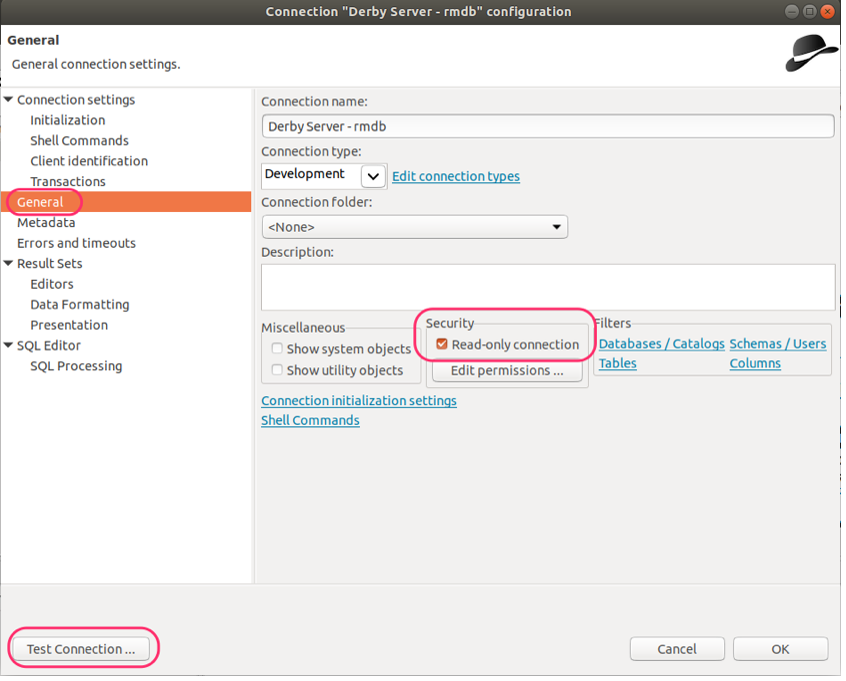 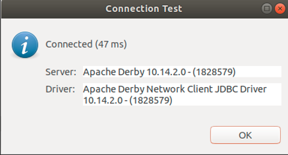
Sample DB Query
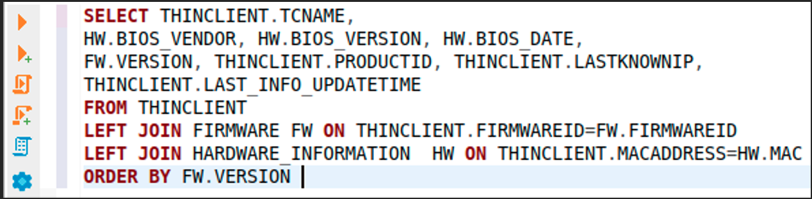
This SQL query can be used in UMS SQL Console
1 | |
Appendix - Linux Scripts
Appendix - Current IGEL Downloads
| Name | Description - Link |
|---|---|
| UMS 12 | UMS 12 for Windows Server |
| UMS 12 | UMS 12 for Linux Server |
| UMS 6 | UMS 6 for Windows Server |
| UMS 6 | UMS 6 for Linux Server |
| OSC - OS 12 | OSC - OS 12 |
| OSC - OS 12 PXE | OSC - OS 12 PXE |
| OSC - OS 11 | OSC - OS 11 |
| OS Update - OS 11 | OS Update Firmware - OS 11 |
| ICG 12 | ICG 12 |
| ICG 2 | ICG 2 |
1 2 3 4 5 6 7 8 9 10 11 12 13 14 15 16 17 18 19 20 21 22 23 24 25 26 27 28 29 | |